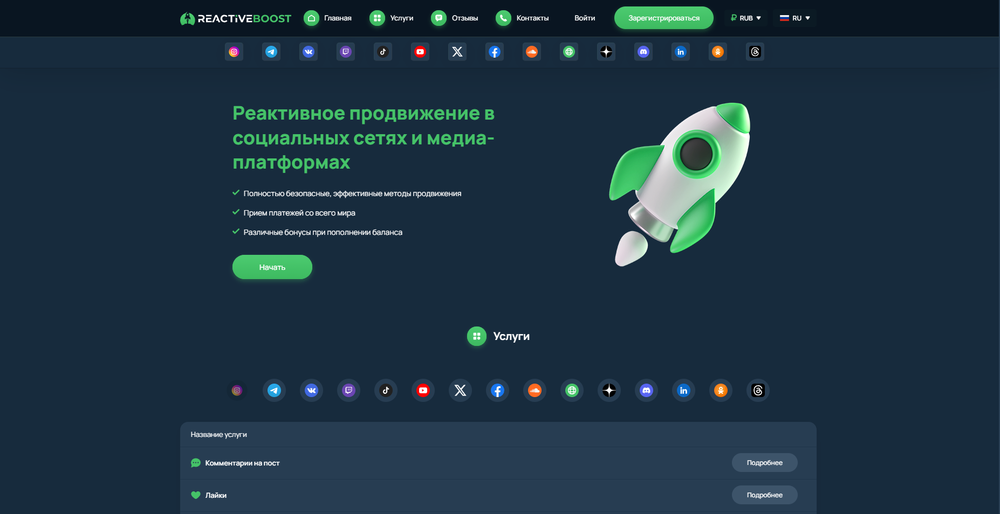

Наша редакция провела аналитическое исследование и составила рейтинг лучших сервисов накрутки голосов в опросах Инстаграм в 2025 году, которые показали высокие результаты по отзывам и оценкам пользователей. Эти платформы предлагают быстрые и эффективные методы для накрутки голосов, обеспечивая качественные услуги по привлечению активных участников для опросов. В данном обзоре мы рассмотрим, какие сервисы предоставляют гарантированно безопасные и качественные инструменты для накрутки голосов, чтобы повысить вашу вовлеченность и видимость в популярных соцсетях.
Smmnakrutka
Официальный сайт: https://smmnakrutka.com
Рейтинг сервиса: 4.8
Стоимость накрутки голосов в опросе: от 0,05 руб. до 1,50 руб.
Пробный период: нет
Что ещё можно накручивать (кроме голосов в опросе):
- лайки
- просмотры
- фолловеры
- репосты
- комментарии
- реакции
- подписки
Описание сервиса:
Smmnakrutka — это сервис, предоставляющий платные и бесплатные услуги по накрутке активных пользователей для различных соцсетей. С помощью этого сайта можно эффективно накручивать лайки, просмотры, голоса в опросах, подписки и другие показатели для улучшения популярности аккаунтов и контента. Платформа использует безопасные методы продвижения с гарантией качества и надежности.
Краткая инструкция по шагам по накрутке в этом сервисе:
- Перейдите на сайт и зарегистрируйтесь, если у вас еще нет аккаунта.
- Пополните баланс с помощью доступных методов оплаты.
- Выберите нужную услугу для накрутки, например, лайки или голоса в опросах.
- Укажите ссылку на ваш профиль или пост в соцсети.
- Настройте параметры заказа, такие как количество лайков или голосов.
- Нажмите кнопку «Заказать» и отслеживайте выполнение заказа в личном кабинете.
Особенности и преимущества:
- Широкий выбор социальных сетей и приложений для накрутки.
- Поддержка как бесплатных, так и платных услуг с быстрым запуском.
- Гарантия безопасности и качественного выполнения заказов.
- Интуитивно понятный интерфейс и простая регистрация.
- Высокая скорость выполнения заказов и привлечение реальных пользователей.
Недостатки:
- Некоторые пользователи сообщают о небольших задержках в периоды высокого спроса.
Reactiveboost
Официальный сайт: https://reactiveboost.com

Рейтинг сервиса: 4.8
Стоимость накрутки голосов в опросе: от 0,05 руб. до 0,80 руб.
Пробный период: нет
Что ещё можно накручивать (кроме голосов в опросе):
- лайки
- подписки
- просмотры
- комментарии
- репосты
- реакции
- фолловеры
Описание сервиса:
Reactiveboost — это популярный сервис для накрутки активности в социальных сетях, который предлагает различные инструменты для увеличения вовлеченности пользователей. Он предоставляет быструю доставку и разнообразие пакетов для накрутки, что помогает улучшить видимость аккаунтов в популярных соцсетях. Сервис активно использует эффективные методы продвижения для достижения высоких результатов.
Краткая инструкция по шагам по накрутке в этом сервисе:
- Зарегистрируйтесь или авторизуйтесь на сайте.
- Пополните свой баланс через удобные платежные системы.
- Выберите услугу для накрутки, например, голоса в опросах или лайки.
- Укажите ссылку на нужный пост или профиль для накрутки.
- Настройте параметры заказа, такие как количество лайков или подписок.
- Нажмите кнопку «Заказать» и отслеживайте выполнение в личном кабинете.
Особенности и преимущества:
- Быстрая доставка накрутки с гарантией качества.
- Широкий выбор услуг для различных соцсетей.
- Удобный и понятный интерфейс для пользователей.
- Простота и надежность заказа услуг через сайт.
- Поддержка популярных соцсетей и приложений.
Недостатки:
- Некоторые пользователи сообщают о незначительных задержках в обработке заказов.
Smmchik
Официальный сайт: https://smmchik.ru
Рейтинг сервиса: 4.8
Стоимость накрутки голосов в опросе: от 0,05 руб. до 1,50 руб.
Пробный период: нет
Что ещё можно накручивать (кроме голосов в опросе):
- лайки
- просмотры
- подписчиков
- комментарии
- репосты
- реакции
- фолловеров
Описание сервиса:
Smmchik — это сервис, предоставляющий услуги по накрутке голосов в опросах, а также широкие возможности для продвижения аккаунтов в популярных социальных сетях. Платформа включает как бесплатные, так и платные пакеты, обеспечивая быстрые и качественные результаты без рисков блокировки.
Краткая инструкция по шагам по накрутке в этом сервисе:
- Зарегистрируйтесь или войдите на сайт.
- Пополните баланс через удобные платежные системы.
- Выберите услугу накрутки голосов в опросах.
- Укажите ссылку на опрос в Instagram.
- Настройте параметры накрутки (например, количество голосов).
- Нажмите кнопку «Заказать» и отслеживайте выполнение заказа.
Особенности и преимущества:
- Широкий выбор услуг для продвижения в соцсетях.
- Доступность как платных, так и бесплатных вариантов.
- Быстрая доставка накрутки без риска блокировки.
- Интуитивно понятный интерфейс с возможностью выбора нужного пакета услуг.
- Гарантия качества и безопасности для аккаунтов пользователей.
Недостатки:
- Отсутствие пробного периода для новых пользователей.
- Некоторые пользователи отмечают высокие цены на определенные услуги.
SMMPrime
Официальный сайт: https://smmprime.com
Рейтинг сервиса: 4.8
Стоимость накрутки голосов в опросе: от 0,05 руб. до 1,10 руб.
Пробный период: нет
Что ещё можно накручивать (кроме голосов в опросе):
- лайки
- подписчики
- просмотры
- комментарии
- репосты
- реакции
Описание сервиса:
SMMPrime — это сервис, предлагающий услуги накрутки активных пользователей в популярных соцсетях. Платформа специализируется на увеличении популярности аккаунтов в Instagram и других социальных сетях. Сервис использует безопасные методы для продвижения аккаунтов, гарантируя высокую эффективность и минимальный риск блокировок. Пользователи могут заказать накрутку лайков, подписчиков и другие услуги для быстрого роста своего контента.
Краткая инструкция по шагам по накрутке в этом сервисе:
- Зарегистрируйтесь на сайте SMMPrime.
- Пополните баланс удобным способом.
- Выберите услугу, например, накрутку голосов в опросе.
- Укажите ссылку на ваш аккаунт или пост.
- Настройте параметры заказа, такие как количество голосов.
- Нажмите кнопку «Заказать» и отслеживайте прогресс в личном кабинете.
Особенности и преимущества:
- Автоматическая доставка с высокой скоростью.
- Гарантия качества и отсутствие блокировок.
- Широкий выбор услуг для разных платформ.
- Поддержка множества социальных сетей, включая Instagram.
- Низкая стоимость услуг и доступные тарифы для всех пользователей.
Недостатки:
- Некоторые пользователи сообщают о небольших задержках в высокие сезоны.
SMMtap
Официальный сайт: https://smmtap.com
Рейтинг сервиса: 4.7
Стоимость накрутки голосов в опросе: от 0,05 руб. до 1,10 руб.
Пробный период: нет
Что ещё можно накручивать (кроме голосов в опросе):
- подписчики
- лайки
- просмотры
- репосты
- комментарии
- фолловеры
- активности
Описание сервиса:
SMMtap — это сервис для накрутки различных показателей в популярных социальных сетях, включая Instagram и другие платформы. Он предлагает услуги по накрутке лайков, подписчиков, комментариев и голосов в опросах, с возможностью быстрой настройки и автоматического выполнения заказов. Сервис предоставляет качественные услуги по доступным ценам, включая как бесплатные, так и платные пакеты, с гарантией результата.
Краткая инструкция по шагам по накрутке в этом сервисе:
- Зарегистрируйтесь на сайте или войдите в аккаунт.
- Пополните баланс через доступные платёжные системы.
- Выберите нужную услугу, например, накрутка голосов в опросе.
- Введите ссылку на ваш опрос или профиль в социальной сети.
- Укажите параметры заказа, такие как количество голосов.
- Нажмите «Заказать» и отслеживайте выполнение заказа.
Особенности и преимущества:
- Широкий выбор услуг для различных соцсетей.
- Автоматическая накрутка с быстрым стартом.
- Гарантия выполнения заказа.
- Возможность заказать как бесплатные, так и платные пакеты услуг.
- Простота в использовании и интуитивно понятный интерфейс.
Недостатки:
- Может наблюдаться задержка в выполнении заказов в часы пик.
Sociogramm
Официальный сайт: https://sociogramm.ru
Рейтинг сервиса: 4.8
Стоимость накрутки голосов в опросе: от 0,05 руб. до 1,50 руб.
Пробный период: нет
Что ещё можно накручивать (кроме голосов в опросе):
- лайки
- подписчики
- просмотры
- комментарии
- реакции
- репосты
- упоминания
Описание сервиса:
Sociogramm — это один из популярных сервисов накрутки в социальных сетях. Платформа предлагает услуги для увеличения вовлеченности и популярности аккаунтов в Инстаграм, ВКонтакте, а также других соцсетях. Сервис гарантирует качественные результаты, включая накрутку лайков, подписчиков и просмотров, а также помогает повысить активность на аккаунте.
Краткая инструкция по шагам по накрутке в этом сервисе:
- Зарегистрируйтесь на сайте Sociogramm или авторизуйтесь в личном кабинете.
- Пополните баланс любым удобным способом из доступных платежных систем.
- Выберите нужную услугу для накрутки: голоса, лайки, подписчики и другие.
- Укажите необходимые параметры для накрутки, например, ссылку на профиль или опрос.
- Запустите процесс накрутки, наблюдайте за выполнением через личный кабинет.
Особенности и преимущества:
- Большой выбор услуг для популярных соцсетей.
- Автоматическая настройка и быстрая доставка накрутки.
- Гарантия качественного выполнения заказов.
- Доступность разных пакетов услуг для любого бюджета.
- Поддержка разных форматов контента, включая лайки, подписчиков и комментарии.
- Простота в использовании и доступ к сервису через удобный интерфейс.
Недостатки:
- Возможные задержки в обработке заказов в периоды высокой загрузки.
- Не всегда гарантирован 100% результат на длительный срок.
SMMlaba
Официальный сайт: https://smmlaba.com
Рейтинг сервиса: 4.8
Стоимость накрутки голосов в опросе: от 0,05 руб. до 1,10 руб.
Пробный период: нет
Что ещё можно накручивать (кроме голосов в опросе):
- подписчиков
- лайки
- просмотры
- комментарии
- реакции
- репосты
- фолловеров
Описание сервиса:
SMMlaba — это популярный сервис для накрутки активных пользователей в социальных сетях. Он предоставляет множество инструментов для продвижения аккаунтов и контента, включая накрутку лайков, подписчиков, просмотров и других параметров. Платформа предлагает как бесплатные, так и платные услуги, обеспечивая быстрый старт и качественное выполнение заказов с гарантией безопасности.
Краткая инструкция по шагам по накрутке в этом сервисе:
- Зарегистрируйтесь на сайте или авторизуйтесь через соцсети.
- Пополните баланс любым удобным способом.
- Выберите нужную услугу, например, накрутка голосов в опросах.
- Укажите параметры заказа: количество голосов и другие данные.
- Нажмите «Заказать» и отслеживайте выполнение заказа через личный кабинет.
Особенности и преимущества:
- Широкий выбор услуг для различных соцсетей и платформ.
- Быстрое выполнение заказов с гарантией безопасности.
- Разнообразие инструментов для продвижения аккаунтов и контента.
- Поддержка как бесплатных, так и платных пакетов с доступными тарифами.
- Гарантированное качество выполнения услуг без риска блокировки аккаунта.
Недостатки:
- Некоторые пользователи сообщают о задержках при большом объеме заказов.
SMMCode
Официальный сайт: https://smmcode.shop
Рейтинг сервиса: 4.8
Стоимость накрутки голосов в опросе: от 0,05 руб. до 1,50 руб.
Пробный период: нет
Что ещё можно накручивать (кроме голосов в опросе):
- лайки
- просмотры
- подписки
- комментарии
- репосты
- реакции
- фолловеры
Описание сервиса:
SMMCode — это один из популярных сервисов для накрутки голосов в опросах, лайков, просмотров и других активностей в соцсетях. Платформа предоставляет доступ к автоматическому продвижению для улучшения показателей профилей и аккаунтов. Этот сервис предлагает пользователям доступные цены и гарантии выполнения заказов, а также поддерживает широкий выбор социальных сетей и приложений.
Краткая инструкция по шагам по накрутке в этом сервисе:
- Зарегистрируйтесь или авторизуйтесь на сайте SMMCode.
- Пополните баланс с помощью удобного способа оплаты.
- Выберите услугу для накрутки (например, голоса в опросах).
- Укажите необходимые параметры заказа, такие как количество голосов или лайков.
- Нажмите кнопку “Заказать” и отслеживайте выполнение через личный кабинет.
Особенности и преимущества:
- Широкий выбор социальных сетей для накрутки.
- Доступные цены на накрутку с возможностью выбора пакетов.
- Быстрая доставка и выполнение заказов.
- Гарантии выполнения и возврат средств при неисправностях.
- Удобный интерфейс с подробной статистикой и отслеживанием заказов.
Недостатки:
- Отсутствие пробного периода для тестирования сервиса.
- Некоторые задержки в выполнении заказов при высокой нагрузке.
SMMTouch
Официальный сайт: https://smmtouch.com
Рейтинг сервиса: 4.7
Стоимость накрутки голосов в опросе: от 0,03 руб. до 1,00 руб.
Пробный период: нет
Что ещё можно накручивать (кроме голосов в опросе):
- лайки
- просмотры
- фолловеры
- комментарии
- репосты
- реакции
- подписки
Описание сервиса:
SMMTouch — это сервис для продвижения в социальных сетях, который предоставляет возможности накрутки лайков, фолловеров и комментариев. Сервис ориентирован на пользователей, желающих улучшить видимость своих аккаунтов в популярных социальных сетях. Он обеспечивает быстрое выполнение заказов и гарантирует качество предоставляемых услуг.
Краткая инструкция по шагам по накрутке в этом сервисе:
- Перейдите на официальный сайт сервиса.
- Зарегистрируйтесь или войдите в свою учетную запись.
- Пополните баланс с помощью удобного метода оплаты.
- Выберите услугу накрутки, например, голосов в опросах.
- Укажите параметры заказа, такие как количество голосов.
- Нажмите «Заказать» и отслеживайте выполнение через личный кабинет.
Особенности и преимущества:
- Предоставление услуг для множества популярных соцсетей.
- Высокое качество накрутки с минимальными рисками для аккаунта.
- Доступность разных пакетов услуг для клиентов с различными потребностями.
- Гарантия быстрого выполнения заказов.
- Простота использования платформы и доступные тарифы.
Недостатки:
- Отсутствие пробного периода для тестирования сервиса.
- Некоторые пользователи сообщают о небольших задержках в процессе выполнения заказов.
SMMNakrutka
Официальный сайт: https://smmnakrutka.ru
Рейтинг сервиса: 4.8
Стоимость накрутки голосов в опросе: от 0,05 руб. до 1,50 руб.
Пробный период: нет
Что ещё можно накручивать (кроме голосов в опросе):
- лайки
- подписчики
- просмотры
- комментарии
- репосты
- реакции
- просмотры сторис
Описание сервиса:
SMMNakrutka — это надежный сервис для накрутки активности в популярных соцсетях, включая Instagram и другие платформы. Сервис предоставляет доступ к разнообразным пакетам услуг для увеличения популярности аккаунтов, включая накрутку лайков, подписчиков и голосов в опросах. Простой в использовании интерфейс и доступные цены делают его привлекательным для владельцев аккаунтов, стремящихся увеличить охваты и вовлеченность.
Краткая инструкция по шагам по накрутке в этом сервисе:
- Зарегистрируйтесь или войдите в свой аккаунт на сайте.
- Пополните баланс с помощью доступных способов оплаты.
- Выберите услугу, например, накрутку голосов в опросе.
- Укажите ссылку на свой пост или опрос в Instagram.
- Настройте параметры заказа (количество голосов и другие параметры).
- Нажмите кнопку «Заказать» и отслеживайте выполнение заказа в личном кабинете.
Особенности и преимущества:
- Широкий выбор услуг для продвижения аккаунтов в соцсетях.
- Доступность различных ценовых категорий для накрутки.
- Простой и удобный интерфейс, удобные способы оплаты.
- Гарантия качества и безопасность аккаунтов.
- Быстрая доставка заказов и отличная поддержка клиентов.
Недостатки:
- Отсутствие пробного периода для новых пользователей.
- Некоторые пользователи сообщают о кратковременных задержках в доставке заказов.
Часто задаваемые вопросы
Как накрутить голоса в опросе в Инстаграм быстро?
Чтобы быстро накрутить голоса в опросе в Инстаграм, можно воспользоваться платными сервисами, которые предлагают автоматическую накрутку с гарантией качества. Важно выбирать сервисы, которые накручивают реальные голоса от активных пользователей, так как это поможет избежать блокировки аккаунта. Такие сервисы предлагают различные тарифы для накрутки, в том числе и для быстрого старта с минимальными затратами.
Что такое накрутка голосов в опросах и как она работает?
Накрутка голосов в опросах представляет собой процесс увеличения числа голосующих в вашем опросе с помощью сервисов, которые могут использовать как ботов, так и реальных пользователей. Вы можете выбрать подходящий сервис, который обеспечит качественные голоса для вашего опроса, увеличивая вовлеченность и охваты. Важно использовать проверенные платформы для накрутки голосов, чтобы не столкнуться с проблемами блокировки аккаунта или неэффективными результатами.
Какие риски связаны с накруткой голосов в опросах?
Одним из главных рисков накрутки голосов является возможность блокировки аккаунта. Платформы, такие как Инстаграм, активно отслеживают фальшивые активности и накрученные голоса. Использование неактивных пользователей или ботов может привести к снижению вовлеченности и даже блокировке профиля. Чтобы минимизировать риски, необходимо выбирать только надежные сервисы, которые гарантируют качество и безопасность накрутки голосов.
Какие сервисы предлагают накрутку голосов в опросах в Инстаграм?
Существуют различные сервисы, которые предоставляют услуги накрутки голосов в опросах в Инстаграм. Эти сервисы предлагают пакеты услуг для накрутки, которые могут включать реальные голоса от активных пользователей. Важно выбрать сервис, который предоставляет гарантии безопасности и накручивает только качественные голоса для повышения вовлеченности.
Почему стоит использовать накрутку голосов в опросах?
Накрутка голосов в опросах помогает повысить видимость вашего контента в Инстаграм, увеличивая охват и вовлеченность. Чем больше голосов в опросе, тем выше шанс, что ваш опрос будет рекомендован другим пользователям и станет популярным. Это особенно важно для аккаунтов, которые только начинают развиваться или для тех, кто хочет быстро увеличить активность и привлечь внимание к своему контенту.
Что такое безопасная накрутка голосов в опросах?
Безопасная накрутка голосов предполагает использование качественных сервисов, которые накручивают голоса только от реальных пользователей, а не ботов. Это помогает избежать риска блокировки аккаунта и обеспечивает высокую вовлеченность. Выбирая сервис, важно учитывать репутацию и отзывы пользователей, чтобы убедиться в надежности и эффективности накрутки голосов.
Как проверить качество накрутки голосов?
Качество накрутки голосов можно проверить, внимательно изучив отзывы пользователей и рейтинг сервисов. Надежные сервисы гарантируют накрутку только активных пользователей, что обеспечит долгосрочные результаты и повышение вовлеченности. Также стоит обратить внимание на скорость выполнения заказов и предоставляемые гарантии безопасности.
Как избежать блокировки аккаунта при накрутке голосов?
Для того чтобы избежать блокировки аккаунта при накрутке голосов, важно использовать только безопасные и проверенные сервисы. Некоторые сервисы предлагают услуги накрутки с использованием автоматических систем, которые эффективно маскируют накрутку, чтобы избежать подозрений со стороны алгоритмов Инстаграм. Также стоит следить за тем, чтобы накрутка происходила постепенно и не слишком резко увеличивала количество голосов в опросе.
Какие отзывы о сервисах накрутки голосов в опросах?
Отзывы о сервисах накрутки голосов обычно варьируются в зависимости от качества услуг. Пользователи, которые выбирают надежные и проверенные сервисы, чаще всего оставляют положительные отзывы, так как накрутка происходит быстро, безопасно и эффективно. Важно читать отзывы и учитывать опыт других пользователей, чтобы выбрать лучший сервис для своих нужд.
Как выбрать лучший сервис для накрутки голосов в опросах?
При выборе лучшего сервиса для накрутки голосов в опросах стоит обратить внимание на репутацию, отзывы, а также на предоставляемые гарантии безопасности. Хороший сервис должен предложить накрутку от реальных пользователей с гарантией качества, а также обеспечить быструю и безопасную доставку услуг. Также важно выбрать сервис с разумными ценами, которые соответствуют качеству накрутки.